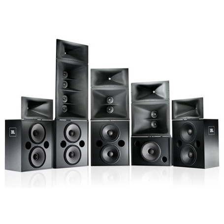
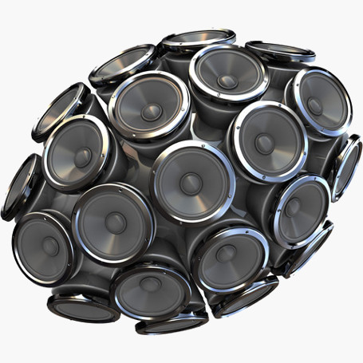
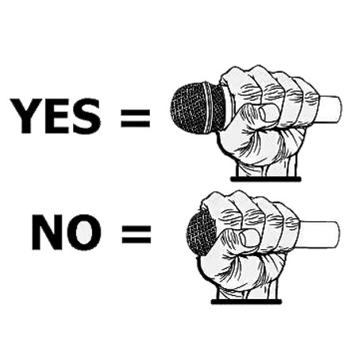
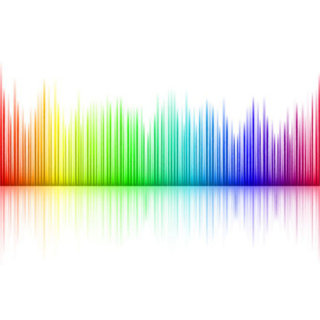

How much gear do I need for a PA system?
There is a list a mixing system and a pair of loudspeakers in a PA system. A mixing system is used to integrate all sound sources and tune to an optimal level before sending out to the loudspeakers. If there will be voice application in the events like speech and singing, one more set of wireless microphone system is needed. In events that involve stages, fold-back loudspeakers are also needed for performers to hear themselves.

How many loudspeakers is enough?
First of all, different loudspeakers can output different level of volume. We usually use Watt like 250W or 500 to express how much power of loudspeakers are needed in an event. Technically speaking, there are various factors determining how many loudspeakers is needed like venue size, number of participants, blocking structures, wall materials and etc. Below is only a rule of thumb.
Voice only event like a talk needs 2W per audience. Interactive event like a wedding party needs 4W per participants. In some music shows like singing along to CD, 6W is required for each person. For really loud application like a Band Show, up to 50W may be needed. If the events are held outdoor, the 150% of the original Watt is needed.

Are there differences in different brand of wireless microphone?
There are! Although different brands of wireless microphone could transmit voice to loudspeakers, there are details that differentiate. From technical aspects, the wireless technology that microphone used will determine how much wireless microphones could work simultaneously without interference. It is not a big problem if you are singing Karaoke at home. However, in a more important event, we would never want to pick up signals from our wireless channels like walkie-talkie.
In addition, some lower quality microphones do not put effort in tuning and pick up range. It may sound like voice over the phone and causes feedback more easily. These would prevent the whole sound system from going up to a sufficient volume level. Finally, some famous brands like Sennheiser, Shure, AKG and other professional level wireless microphone, may offer different objective sound impressions like ‘sweet sound’ ‘crystal clear’. Professional reviews offer more opinions about this.

Are active or passive loudspeakers better?
They have different strengths and weakness. Passive loudspeakers cannot produce sound on their own without pairing with amplifiers. Therefore, one obvious difference is more equipments needed. In addition, the pairing of amplifier need to consider the number of loudspeakers, wiring methods, power resistance, power consumption, headroom for sudden peak and etc. But the good things are, they can be separately maintained and replaced. Active loudspeakers have amplifiers built in and saves user from the above mentioned issues. However, using active speakers in larger venue require long power cords in addition to the signal cables also used in passive speakers.

Are 12’ or 15’ loudspeakers better?
12’ and 15’ loudspeakers have different sound characteristics. Before introducing the differences, we have to clarify that the size of loudspeakers is not related to the volume. There are other structures that affect volume being measured in SPL. Size affects the sound character more, or in other words, different sizes are sensitive to different frequency.
Generally speaking, 12’ loudspeakers are more sensitive to the frequency of human voice. This makes voice more stand out in speech and singing. Comparatively, 15’ loudspeakers have more bass. This allows more punchy feeling in band or even disco music. Of course, the above is only some simplified explanation. Much more factors are affecting the sound characteristic in addition to loudspeaker size.

How to prevent feedback by microphone selection?
Feedback can be a special effect in performance. However, we would not like those irritating feedback in event like a speech. Worse still, serious feedback may damage the gears. A microphone that is too sensitive to pick up signal from loudspeakers is one of the main causes of feedback. However, a low sensitivity microphone could not pick up sufficient signals for comfortable volume level.
To maintain the sensitive without causing feedback, different brands design different pick up polar patterns. A polar pattern is only sensitive to sound from a certain direction. For example, a cardioid or supercardioid polar pattern microphone would only pick up sound in front of them which make it suitable for singing and speaking on stage.
In addition to polar pattern, your choice of condenser or dynamic microphone also affect the chances of feedback significantly. In common events like a speech, dynamic microphone is recommended. If very subtle voice would like to be picked up, like a very detailed singing voice, you may need a condenser microphone. However, the chances of feedback have to be balanced out by various setting by experienced sound technicians.

How to prevent feedback by loudspeakers placement?
Feedback is caused by a loop that signals from loudspeakers being picked up by microphone and then sending back to the loudspeakers. Therefore, appropriate loudspeakers placement can also prevent feedback in addition to microphone choice.
If possible, it is recommended to put microphone to the back of loudspeaker. However, speakers would not hear themselves in larger venue. In this situation, we can place an monitor speakers in front of the speakers but this again increases the chance of feedback. Experienced technicians will place speakers in appropriate angle that lower this chance.

How to handle feedback by EQ?
Each PA system and venue has certain frequencies that are sensitive to feedback. Experienced audio technician will ‘ring out’ the system during setting. That means putting the sound system to the edge of feedback, detect the frequency of feedback, and cut back the frequency in issue by an equalizer (EQ).
Common mixing console has an EQ but limited to 3 or 5 band. They are not suitable for feedback prevention because the frequencies in trouble could be much more than 5. In addition, each band is controlling a wide range of frequencies which would affect the sound characteristics in addition to feedback. Therefore, more professional equalizer is usually required to achieve feedback prevention.